Hafta 12
Karar Kuramı: Karar Ağaçları
04/12/2025
Karar Ağacı (1)
Karar Ağacı (1)
- Şimdiye kadar, sonuçların matris veya tablo biçiminde gösterilmesinin mümkün olduğu bir olaylar kümesi-bir strateji seçimi olarak özetlenebilecek durumların karar problemleri incelenmiştir.
- Oysa karar verme genellikle, birden fazla olaylar kümesinin bulunduğu, her küme için bir eylem seçiminin söz konusu olduğu çok aşamalı bir süreçtir.
- Bu tip problemlerin matris veya tablo yaklaşımıyla çözülmesi doğru değildir. Matris yerine karar ağacı oluşturulması uygun olur.
- Karar vericinin karar aldığı her bir nokta karar noktası olup karar noktaları ağaç üzerinde bir kare ile gösterilir.
- Bu kareden çıkan dallar karar vericinin stratejilerine karşılık gelir.
- Karar vericinin kontrolü dışında olan olaylar dallar üzerinde gösterilirler. Bu noktalara olay düğüm noktası veya şans noktası denir.
Karar Ağacı (2)
Karar Ağacı (2)
- Olayı simgeleyen sembol ve olayın ortaya çıkma olasılığı ait olduğu dal üzerinde gösterilir.
- Şans noktasından çıkan dallar, karar vericiyi bir başka şans noktasına veya bir karar noktasına götürebilir.
- Karar probleminin karar ağacı ile çözümünde sondan başa doğru hesaplama yaklaşımı uygulanır.
- Bunun için oluşturulan karar ağacının en son aşamasındaki uç noktalardan başlanır ve ağaç üzerinde başa doğru gidilir.
- Bu ilerleyiş sırasında karşılaşılan karar noktalarının her birinde o düğümün en olabilir değeri, beklenen değeri ya da beklenen pişmanlığı hesaplanır. İstenilen değerlerden en iyi olanı o düğümün üzerine yazılır.
- Başlangıç noktasına ulaşıldığında çözüm işlemi tamamlanmış olur.
Örnek 1: En İyi Strateji - Karar Ağacı
Örnek 1: En İyi Strateji - Karar Ağacı
- Aşağıda verilen matristeki değerleri hem kazanç değerleri hem de kayıp değerleri olarak düşünerek soruyu,
- En yüksek olabilirlik
- Beklenenen değer ve
- Beklenen pişmanlık yöntemlerini kullanarak karar ağacı yardımıyla çözün ve her bir durum için optimal stratejiyi bulun.
| Sipariş Miktarı | İstem Miktarı | |||
|---|---|---|---|---|
| O1 | O2 | O3 | O4 | |
| Olasılık | 0.2 | 0.5 | 0.2 | 0.1 |
| S1 | 26 | 26 | 18 | 22 |
| S2 | 22 | 34 | 30 | 18 |
| S3 | 28 | 24 | 34 | 26 |
| S4 | 22 | 30 | 28 | 20 |
Örnek 1: En İyi Strateji - Karar Ağacı - Kazanç - Genel Gösterim
Örnek 1: En İyi Strateji - Karar Ağacı - Kazanç - Genel Gösterim
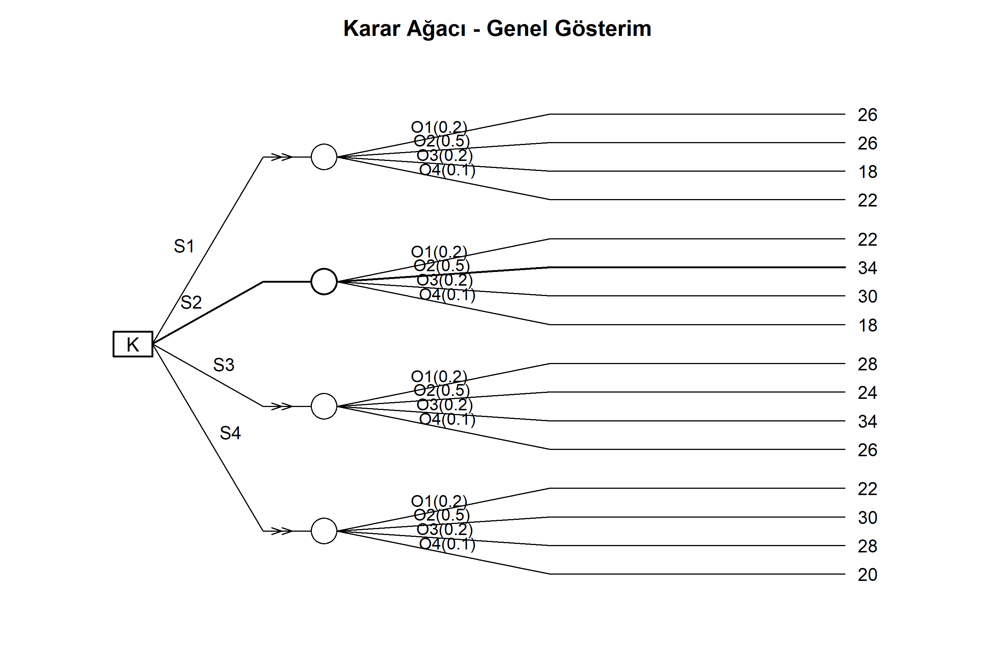
Örnek 1: En İyi Strateji - Karar Ağacı - Kazanç - En Çok Olabilirlik
Örnek 1: En İyi Strateji - Karar Ağacı - Kazanç - En Çok Olabilirlik
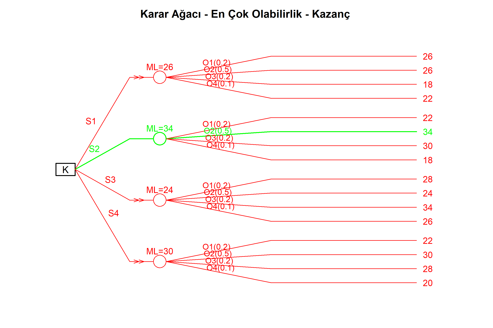
Örnek 1: En İyi Strateji - Karar Ağacı - Kazanç - Beklenen Değer
Örnek 1: En İyi Strateji - Karar Ağacı - Kazanç - Beklenen Değer
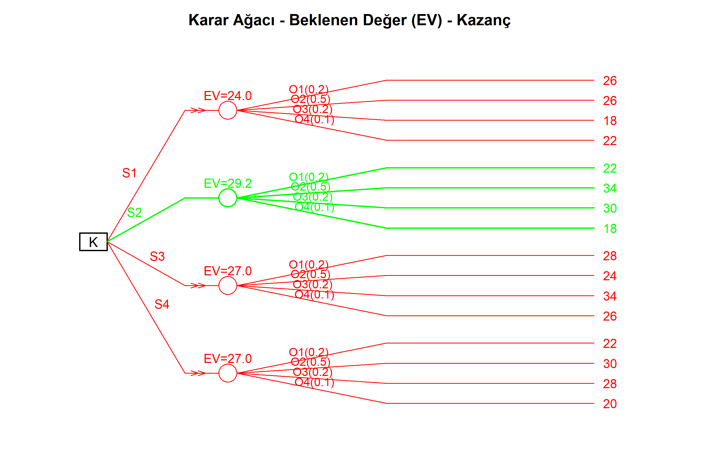
Örnek 1: En İyi Strateji - Kazanç Matrisi - Beklenen Pişmanlık Ölçütü (2)
Örnek 1: En İyi Strateji - Kazanç Matrisi - Beklenen Pişmanlık Ölçütü (2)
Beklenen fırsat kaybı ölçütünde fırsat kayıpları esas alındığından önce fırsat kayıpları matrisinin düzenlenmesi gerekir.
Kazanç matrisi üzerinde çalışıldığı için fırsat kaybı matrisi, orijinal matrisin sütun değerlerinin her birinin, sütun en büyük değerinden çıkartılmasıyla elde edilir.
| Sipariş Miktarı | İstem Miktarı | Beklenen Pişmanlık (ER) | |||
|---|---|---|---|---|---|
| O1 | O2 | O3 | O4 | ||
| Olasılık | 0.2 | 0.5 | 0.2 | 0.1 | |
| S1 | 2 | 8 | 16 | 4 | 8.0 |
| S2 | 6 | 0 | 4 | 8 | 2.8 |
| S3 | 0 | 10 | 0 | 0 | 5.0 |
| S4 | 6 | 4 | 6 | 6 | 5.0 |
Fırsat kaybı matrisinin oluşturulmasından sonra olayların gerçekleşmesi olasılıklarından yararlanarak her bir eylem için beklenen fırsat kaybı değerleri hesaplanmalıdır. Söz konusu değerler aşağıdaki gibi hesaplanacaktır.
- Sonuçta, beklenen fırsat kaybı ölçütüne göre en iyi strateji en küçük beklenen fırsat kaybı değerini \((2.8)\) veren \(S2\) olacaktır.
- S1 için \(0.2\cdot2 + 0.5\cdot8 + 0.2\cdot16 + 0.1\cdot4 = 8.0\)
- S2 için \(0.2\cdot6 + 0.5\cdot0 + 0.2\cdot4 + 0.1\cdot8 = 2.8\)
- S3 için \(0.2\cdot0 + 0.5\cdot10 + 0.2\cdot0 + 0.1\cdot0 = 5.0\)
- S4 için \(0.2\cdot6 + 0.5\cdot4 + 0.2\cdot6 + 0.1\cdot6 = 5.0\)
- Bu ölçütle en iyi olduğu kararlaştırılan \(S2\)’nin daha önce beklenen değer ölçütüyle en iyi olduğu belirlenen strateji olduğuna dikkat edilmelidir.
Örnek 1: En İyi Strateji - Karar Ağacı - Kazanç - Beklenen Pişmanlık
Örnek 1: En İyi Strateji - Karar Ağacı - Kazanç - Beklenen Pişmanlık
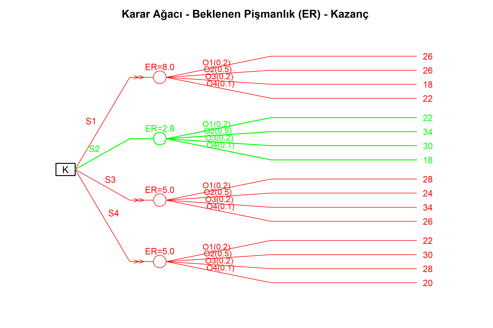
Örnek 1: En İyi Strateji - Karar Ağacı - Kayıp - En Çok Olabilirlik
Örnek 1: En İyi Strateji - Karar Ağacı - Kayıp - En Çok Olabilirlik
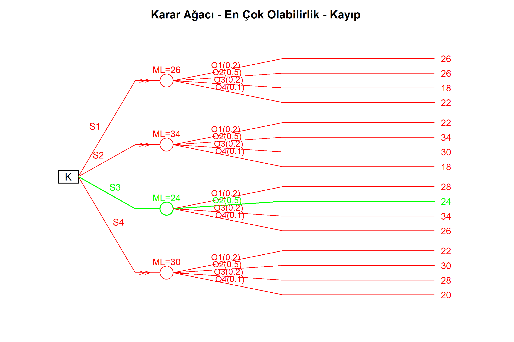
Örnek 1: En İyi Strateji - Karar Ağacı - Kayıp - Beklenen Değer
Örnek 1: En İyi Strateji - Karar Ağacı - Kayıp - Beklenen Değer
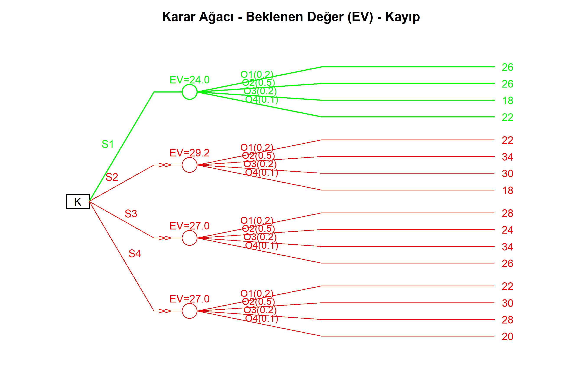
Örnek 1: En İyi Strateji - Kayıp Matrisi - Beklenen Pişmanlık Ölçütü
Örnek 1: En İyi Strateji - Kayıp Matrisi - Beklenen Pişmanlık Ölçütü (2)
Beklenen fırsat kaybı ölçütünde fırsat kayıpları esas alındığından önce fırsat kayıpları matrisinin düzenlenmesi gerekir.
Kayıp matrisi üzerinde çalışıldığı için fırsat kaybı matrisi, orijinal matrisin sütun değerlerinin her birinin, sütun en küçük değerinden çıkartılmasıyla elde edilir.
| Sipariş Miktarı | İstem Miktarı | Beklenen Pişmanlık (ER) | |||
|---|---|---|---|---|---|
| O1 | O2 | O3 | O4 | ||
| Olasılık | 0.2 | 0.5 | 0.2 | 0.1 | |
| S1 | 4 | 2 | 0 | 4 | 2.2 |
| S2 | 0 | 10 | 12 | 0 | 7.4 |
| S3 | 6 | 0 | 16 | 8 | 5.2 |
| S4 | 0 | 6 | 10 | 2 | 5.2 |
Fırsat kaybı matrisinin oluşturulmasından sonra olayların gerçekleşmesi olasılıklarından yararlanarak her bir eylem için beklenen fırsat kaybı değerleri hesaplanmalıdır. Söz konusu değerler aşağıdaki gibi hesaplanacaktır.
- Sonuçta, beklenen fırsat kaybı ölçütüne göre en iyi strateji en küçük beklenen fırsat kaybı değerini \((2.2)\) veren \(S1\) olacaktır.
- S1 için \(0.2\cdot4 + 0.5\cdot2 + 0.2\cdot0 + 0.1\cdot4 = 2.2\)
- S2 için \(0.2\cdot0 + 0.5\cdot10 + 0.2\cdot12 + 0.1\cdot0 = 7.4\)
- S3 için \(0.2\cdot6 + 0.5\cdot0 + 0.2\cdot16 + 0.1\cdot8 = 5.2\)
- S4 için \(0.2\cdot0 + 0.5\cdot6 + 0.2\cdot10 + 0.1\cdot2 = 5.2\)
- Bu ölçütle en iyi olduğu kararlaştırılan \(S1\)’in daha önce beklenen değer ölçütüyle en iyi olduğu belirlenen strateji olduğuna dikkat edilmelidir.
Örnek 1: En İyi Strateji - Karar Ağacı - Kayıp - Beklenen Pişmanlık
Örnek 1: En İyi Strateji - Karar Ağacı - Kayıp - Beklenen Pişmanlık
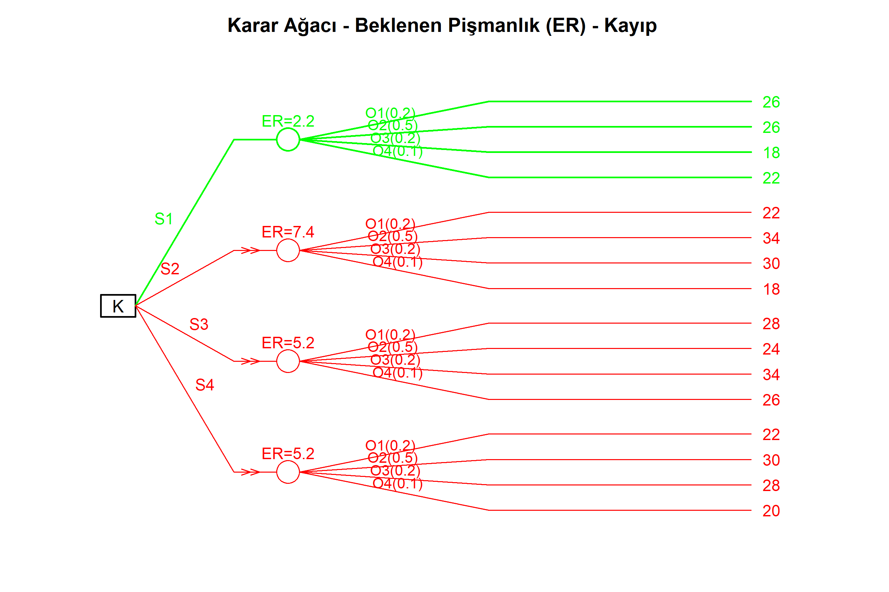
Örnek 2: Mağaza (1)
Örnek 2: Mağaza (1)
- Bir mağaza sahibinin; \(100\), \(200\) veya \(300\) adet sipariş vermek gibi üç stratejisi vardır.
- \(O1\), \(O2\), \(O3\) ve \(O4\) ile simgelenen olaylar sırasıyla, istemin \(100\), \(150\), \(200\) ve \(250\) adet olması durumlarını belirtmektedir.
- İstemin \(100\) olma olasılığının \(0.2\); \(150\) olma olasılığının \(0.3\); \(200\) olma olasılığının \(0.3\) ve \(250\) olma olasılığının \(0.2\) olduğu bilinmektedir.
- Karar matrisinin elemanları farklı sipariş ve istem miktarı birleşimlerinin sonucu elde edilecek a) kâr olarak tanımlandığı,
b) maliyet olarak tanımlandığı durumu göstersin.
| Sipariş Miktarı | İstem Miktarı | |||
|---|---|---|---|---|
| 100 | 150 | 200 | 250 | |
| Olasılık | 0.2 | 0.3 | 0.3 | 0.2 |
| 100 | 3 000 | 2 750 | 2 500 | 2 250 |
| 200 | 1 500 | 4 750 | 8 000 | 7 750 |
| 300 | 2 000 | 5 250 | 8 500 | 11 750 |
Her iki durum için de mağaza sahibinin en yüksek olabilirlik, beklenen değer ve beklenen pişmanlık kurallarına göre hangi stratejiyi seçmesi gerektiğini ve bu stratejiye ait değerleri karar ağacı yardımıyla elde ediniz.
Örnek 2: Mağaza - Karar Ağacı - Kazanç - Genel Gösterim
Örnek 2: Mağaza - Karar Ağacı - Kazanç - Genel Gösterim
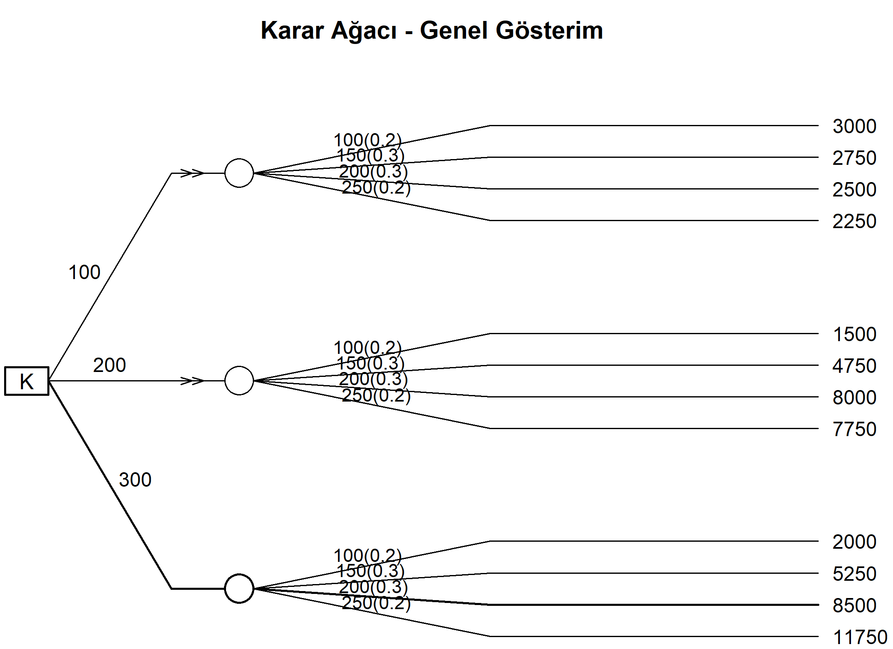
Örnek 2: Mağaza - Karar Ağacı - Kazanç - En Yüksek Olabilirlik
Örnek 1: En İyi Strateji - Karar Ağacı - Kazanç - En Yüksek Olabilirlik
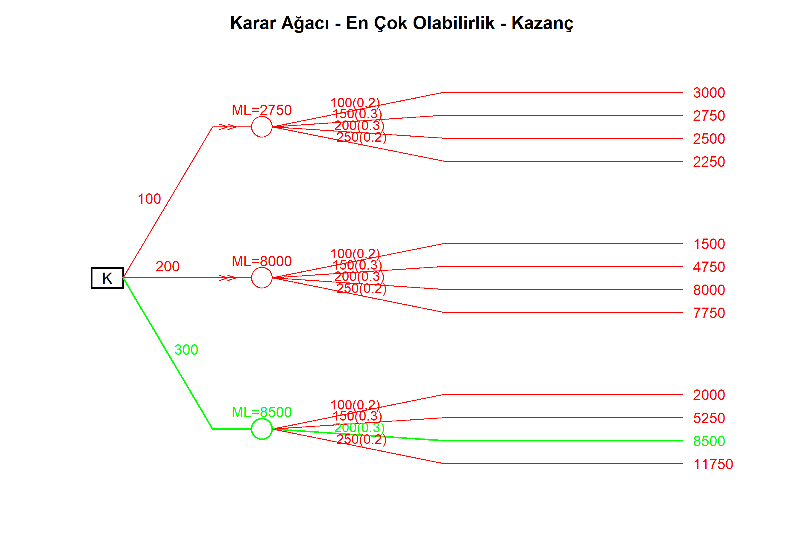
Örnek 2: Mağaza - Karar Ağacı - Kazanç - Beklenen Değer
Örnek 2: Mağaza - Karar Ağacı - Kazanç - Beklenen Değer
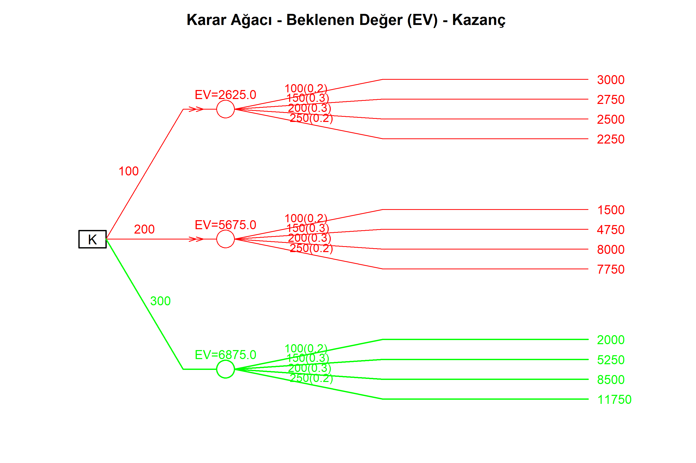
Örnek 2: Mağaza - Kazanç Matrisi - Beklenen Pişmanlık Ölçütü
Örnek 2: Mağaza - Kazanç Matrisi - Beklenen Pişmanlık Ölçütü
Kazanç matrisi üzerinde çalışıldığı için fırsat kaybı matrisi, orijinal matrisin sütun değerlerinin her birinin, sütun en büyük değerinden çıkartılmasıyla elde edilir.
| Sipariş Miktarı | İstem Miktarı | Beklenen Pişmanlık (ER) | |||
|---|---|---|---|---|---|
| M1 (100) | M2 (150) | M3 (200) | M4 (250) | ||
| Olasılık | 0.2 | 0.3 | 0.3 | 0.2 | |
| S1 (100) | 0 | 2 500 | 6 000 | 9 500 | 4 450 |
| S2 (200) | 1 500 | 500 | 500 | 4 000 | 1 400 |
| S3 (300) | 1 000 | 0 | 0 | 0 | 200 |
Fırsat kaybı matrisinin oluşturulmasından sonra olayların gerçekleşmesi olasılıklarından yararlanarak her bir eylem için beklenen fırsat kaybı değerleri hesaplanmalıdır. Söz konusu değerler aşağıdaki gibi hesaplanacaktır.
- S1 - 100 sipariş için \(0.2\cdot0 + 0.3\cdot2500 + 0.3\cdot6000 + 0.2\cdot9500 = 4450\)
- S2 - 200 sipariş için \(0.2\cdot1500 + 0.3\cdot500 + 0.3\cdot500 + 0.2\cdot4000 = 1400\)
- S3 - 300 sipariş için \(0.2\cdot1000 + 0.3\cdot0 + 0.3\cdot0 + 0.2\cdot0 = 200\)
- Sonuçta, beklenen fırsat kaybı ölçütüne göre en iyi strateji en küçük beklenen fırsat kaybı değerini \((200)\) veren S3 - \(300\) sipariş olacaktır.
- Bu ölçütle en iyi olduğu kararlaştırılan \(300\) sipariş’in daha önce beklenen değer ölçütüyle en iyi olduğu belirlenen strateji olduğuna dikkat edilmelidir.
Örnek 2: Mağaza - Karar Ağacı - Kazanç - Beklenen Pişmanlık
Örnek 2: Mağaza - Karar Ağacı - Kazanç - Beklenen Pişmanlık
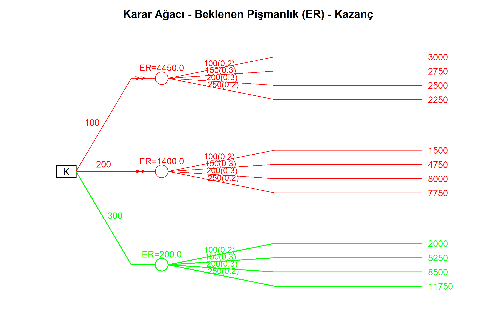
Örnek 2: Mağaza - Karar Ağacı - Maliyet - En Yüksek Olabilirlik
Örnek 1: En İyi Strateji - Karar Ağacı - Maliyet - En Yüksek Olabilirlik
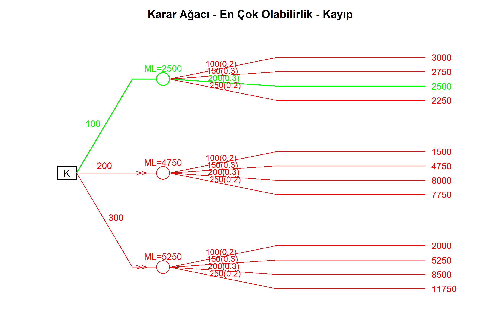
Örnek 2: Mağaza - Karar Ağacı - Maliyet - Beklenen Değer
Örnek 2: Mağaza - Karar Ağacı - Maliyet - Beklenen Değer
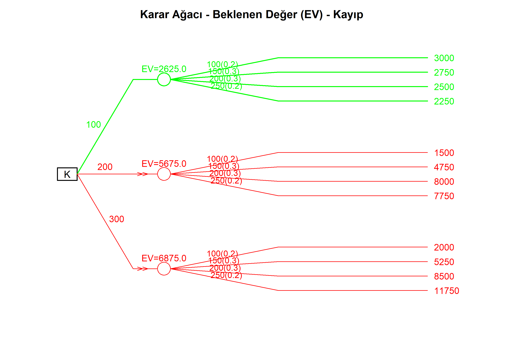
Örnek 2: Mağaza - Kayıp Matrisi - Beklenen Pişmanlık Ölçütü
Örnek 2: Mağaza - Kayıp Matrisi - Beklenen Pişmanlık Ölçütü
Kayıp matrisi üzerinde çalışıldığı için fırsat kaybı matrisi, orijinal matrisin sütun değerlerinin her birinden, sütun en küçük değerinin çıkartılmasıyla elde edilir.
| Sipariş Miktarı | İstem Miktarı | Beklenen Pişmanlık (ER) | |||
|---|---|---|---|---|---|
| M1 (100) | M2 (150) | M3 (200) | M4 (250) | ||
| Olasılık | 0.2 | 0.3 | 0.3 | 0.2 | |
| S1 (100) | 1 500 | 0 | 0 | 0 | 300 |
| S2 (200) | 0 | 2 000 | 5 500 | 5 500 | 3 350 |
| S3 (300) | 500 | 2 500 | 6 000 | 9 500 | 4 550 |
Fırsat kaybı matrisinin oluşturulmasından sonra olayların gerçekleşmesi olasılıklarından yararlanarak her bir eylem için beklenen fırsat kaybı değerleri hesaplanmalıdır. Söz konusu değerler aşağıdaki gibi hesaplanacaktır.
- S1 - 100 sipariş için \(0.2\cdot 1500 + 0.3\cdot 0 + 0.3\cdot 0 + 0.2\cdot 0 = 300\)
- S2 - 200 sipariş için \(0.2\cdot 0 + 0.3\cdot 2000 + 0.3\cdot 5500 + 0.2\cdot 5500 = 3350\)
- S3 - 300 sipariş için \(0.2\cdot 500 + 0.3\cdot 2500 + 0.3\cdot 6000 + 0.2\cdot 9500 = 4550\)
- Sonuçta, beklenen fırsat kaybı ölçütüne göre en iyi strateji en küçük beklenen fırsat kaybı değerini \((300)\) veren S1 - \(100\) sipariş olacaktır.
- Bu ölçütle en iyi olduğu kararlaştırılan \(100\) sipariş’in daha önce beklenen değer ölçütüyle en iyi olduğu belirlenen strateji olduğuna dikkat edilmelidir.
Örnek 2: Mağaza - Karar Ağacı - Maliyet - Beklenen Pişmanlık
Örnek 2: Mağaza - Karar Ağacı - Maliyet - Beklenen Pişmanlık
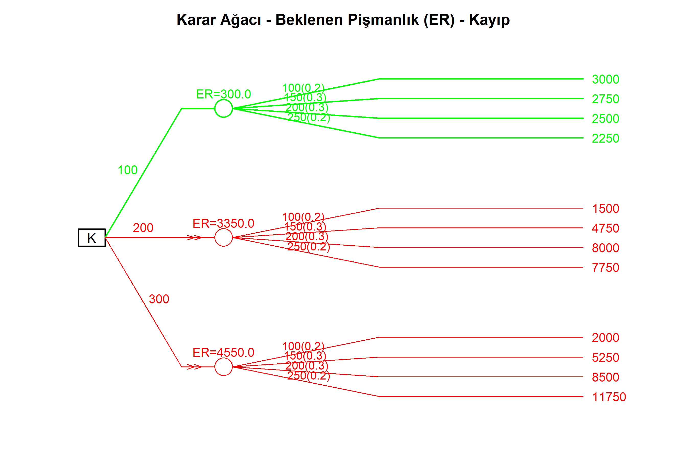
Örnek 3: Hisse Senedi
Örnek 3: Hisse Senedi
- A ve B firmalarının hisse senetlerini alarak borsaya \(10000\) pb para yatırmak istediğinizi varsayalım.
- A firmasının hisse senetleri riskli olmakla birlikte,
- Borsanın iyi gittiği durumda (boğaların hakim olduğu pazarda) gelecek sene için değeri \(\%50\) artacaktır.
- Eğer borsa iyi gitmezse (ayıların hakim olduğu pazarda) hisse senedinin değeri \(%20\) azalacaktır.
- B hisse senedi ise güvenli bir şekilde
- boğaların hakim olduğu pazarda \(\%15\) getiri,
- ayıların hakim olduğu pazarda \(\%5\) getiri sağlayacaktır.
- Başvurulan tüm kaynaklar boğaların hakim olduğu pazara \(\%60\), ayıların bulunduğu pazara \(\%40\) şans vererek tahmin yapmaktadır.
- Paranızı nereye yatırmanız gerektiğini ve olası kazancınızı en yüksek olabilirlik, beklenen değer ve beklenen pişmanlık kurallarına göre karar ağacı kullanarak hesaplayınız.
Örnek 3: Hisse Senedi - Karar Matrisinin Oluşturulması
Örnek 3: Hisse Senedi - Karar Matrisinin Oluşturulması
- Diğer sorulardan farklı olarak bu soruda karar matrisi bize verilmemiş, olası durumlara göre matrisi bizden hazırlamamız beklenmektedir.
- Olası durumlara bakılırsa,
- A hisse senedi seçilir ve boğa yılı olursa, \(10000 \times 0.5 = 5000\) pb getiri olur.
- A hisse senedi seçilir ve ayı yılı olursa, \(10000 \times (-0.2) = (-2000)\) pb getiri olur.
- B hisse senedi seçilir ve boğa yılı olursa, \(10000 \times 0.15 = 1500\) pb getiri olur.
- A hisse senedi seçilir ve ayı yılı olursa, \(10000 \times 0.05 = 500\) pb getiri olur.
Bu bilgilere göre karar matrisi aşağıdaki gibi elde edilir.
| Hisse Senedi | Yıllık Getiri | |
|---|---|---|
| Boğa | Ayı | |
| Olasılık | 0.6 | 0.4 |
| A | 5 000 | -2 000 |
| B | 1 500 | 500 |
Örnek 3: Hisse Senedi - Karar Ağacı - Kazanç - Genel Gösterim
Örnek 3: Hisse Senedi - Karar Ağacı - Kazanç - Genel Gösterim
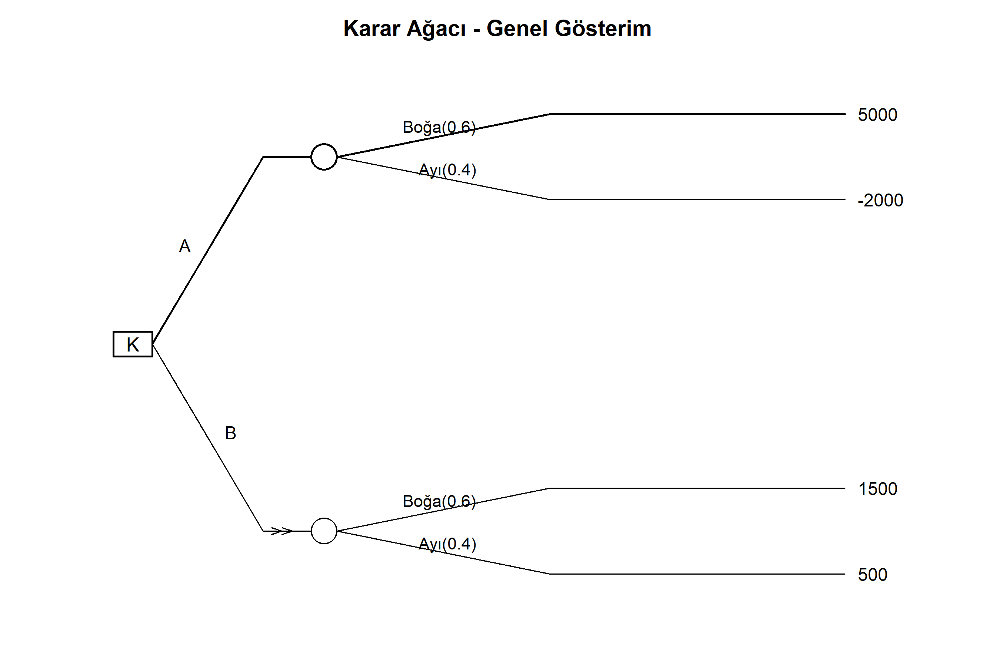
Örnek 3: Hisse Senedi - Karar Ağacı - Kazanç - En Yüksek Olabilirlik
Örnek 3: Hisse Senedi - Karar Ağacı - Kazanç - En Yüksek Olabilirlik
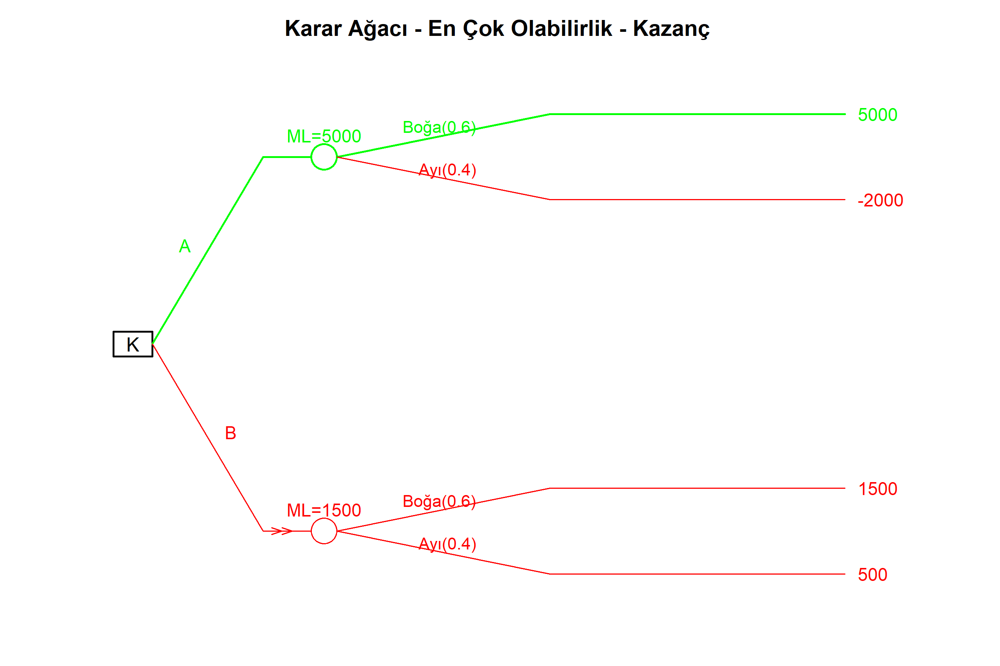
Örnek 3: Hisse Senedi - Karar Ağacı - Kazanç - Beklenen Değer
Örnek 3: Hisse Senedi - Karar Ağacı - Kazanç - Beklenen Değer
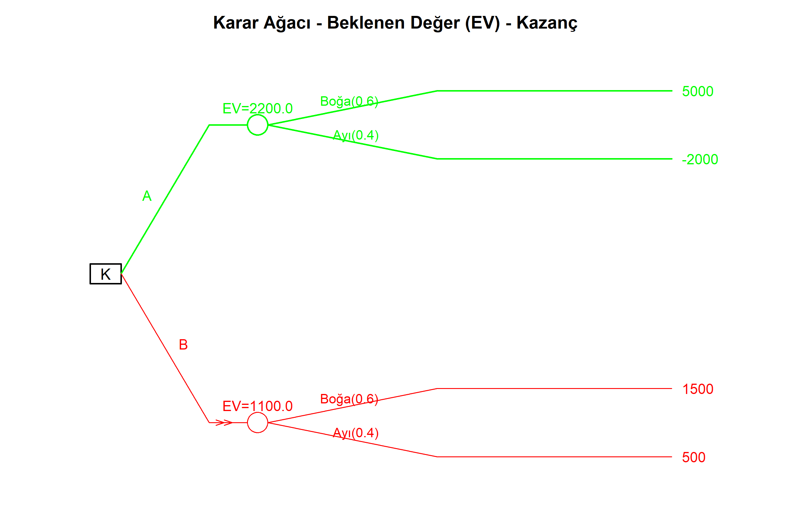
Örnek 3: Hisse Senedi - Kazanç Matrisi - Beklenen Pişmanlık Ölçütü
Örnek 3: Hisse Senedi - Kazanç Matrisi - Beklenen Pişmanlık Ölçütü
Kazanç matrisi üzerinde çalışıldığı için fırsat kaybı matrisi, orijinal matrisin sütun değerlerinin her birinin, sütun en büyük değerinden çıkartılmasıyla elde edilir.
| Hisse Senedi | Yıllık Getiri | Beklenen Pişmanlık (ER) | |
|---|---|---|---|
| Boğa | Ayı | ||
| Olasılık | 0.6 | 0.4 | |
| A | 0 | 2 500 | 1 000 |
| B | 3 500 | 0 | 2 100 |
Fırsat kaybı matrisinin oluşturulmasından sonra olayların gerçekleşmesi olasılıklarından yararlanarak her bir eylem için beklenen fırsat kaybı değerleri hesaplanmalıdır. Söz konusu değerler aşağıdaki gibi hesaplanacaktır.
- A hisse senedi için \(0.6\cdot 0 + 0.4 \cdot 2500 = 1000\)
- B hisse senedi için \(0.6\cdot 3500 + 0.4\cdot 0 = 2100\)
- Sonuçta, beklenen fırsat kaybı ölçütüne göre en iyi strateji en küçük beklenen fırsat kaybı değerini \((1000)\) veren A hisse senedi olacaktır.
- Bu ölçütle en iyi olduğu kararlaştırılan A hisse senedi’nin daha önce beklenen değer ölçütüyle en iyi olduğu belirlenen strateji olduğuna dikkat edilmelidir.
Örnek 3: Hisse Senedi - Karar Ağacı - Kazanç - Beklenen Pişmanlık
Örnek 3: Hisse Senedi - Karar Ağacı - Kazanç - Beklenen Pişmanlık
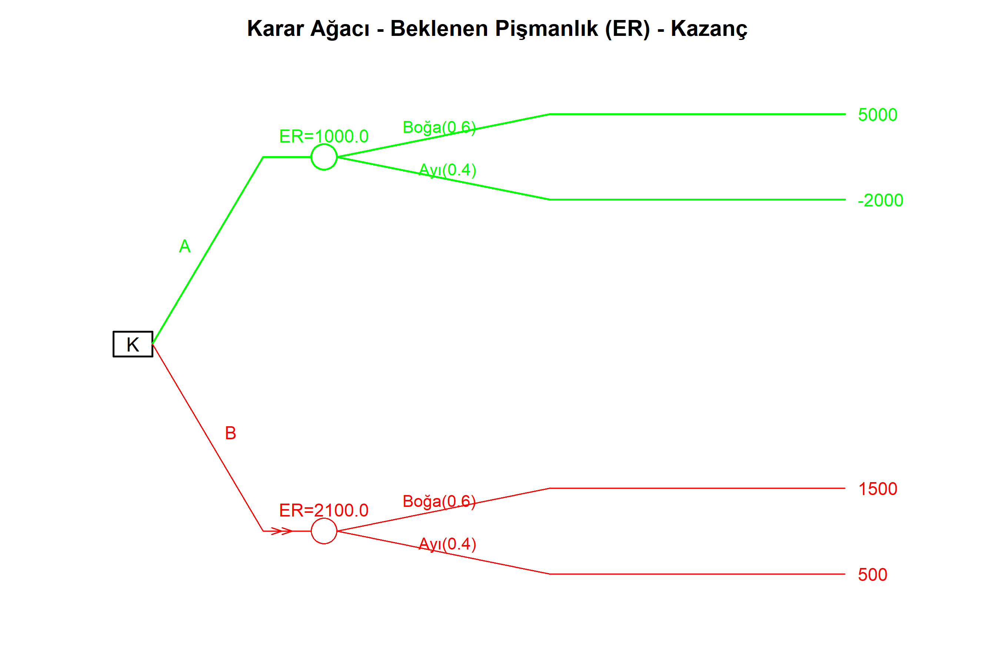
Örnek 4: Fon
Örnek 4: Fon
- Paranızı kamu, gelişme ve global gibi üç farklı fonda değerlendirebilme şansına sahip olduğunuzu düşünelim.
- Yatırımınızın değeri pazar koşullarına bağlı olarak değişecektir.
- Pazarın kötüye gitme olasılığı \(\%10\), ne kötü ne iyi gitme olasılığı \(\%50\) ve iyi gitme olasılığı ise \(\%40\)’tır.
- Aşağıdaki tabloda pazarın durumu ve paranın yatırıldığı fon göz önüne alınarak hazırlanan kazanç matrisi verilmiştir.
| Fon | Gelecekteki Pazar Durumu | ||
|---|---|---|---|
| Kötü | Ortada | İyi | |
| Olasılık | 0.1 | 0.5 | 0.4 |
| Kamu | 5 | 7 | 8 |
| Gelişme | -10 | 5 | 30 |
| Global | 2 | 7 | 20 |
Buna göre hangi fonu seçmeniz gerektiğini ve elde edeceğiniz beklenen kazancı en yüksek olabilirlik, beklenen değer ve beklenen pişmanlık kurallarına göre karar ağacı kullanarak hesaplayınız.
Örnek 4: Fon - Karar Ağacı - Kazanç - Genel Gösterim
Örnek 4: Fon - Karar Ağacı - Kazanç - Genel Gösterim
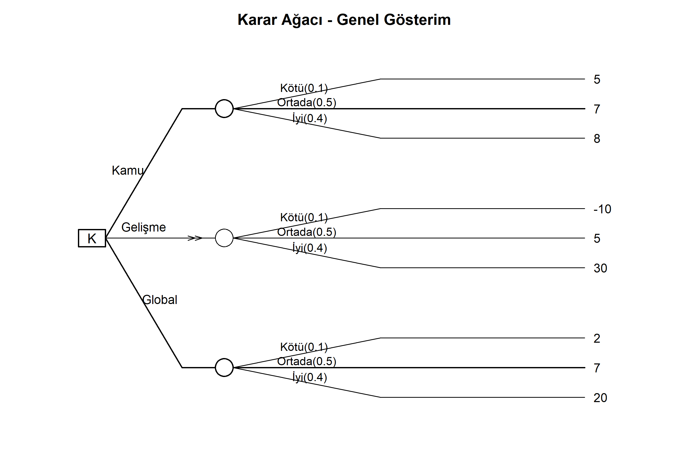
Örnek 4: Fon - Karar Ağacı - Kazanç - En Yüksek Olabilirlik
Örnek 4: Fon - Karar Ağacı - Kazanç - En Yüksek Olabilirlik
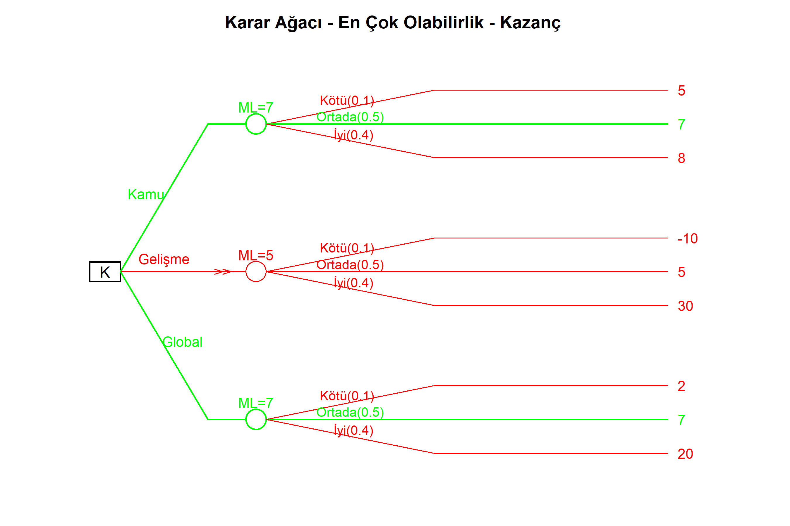
Örnek 4: Fon - Karar Ağacı - Kazanç - Beklenen Değer
Örnek 4: Fon - Karar Ağacı - Kazanç - Beklenen Değer
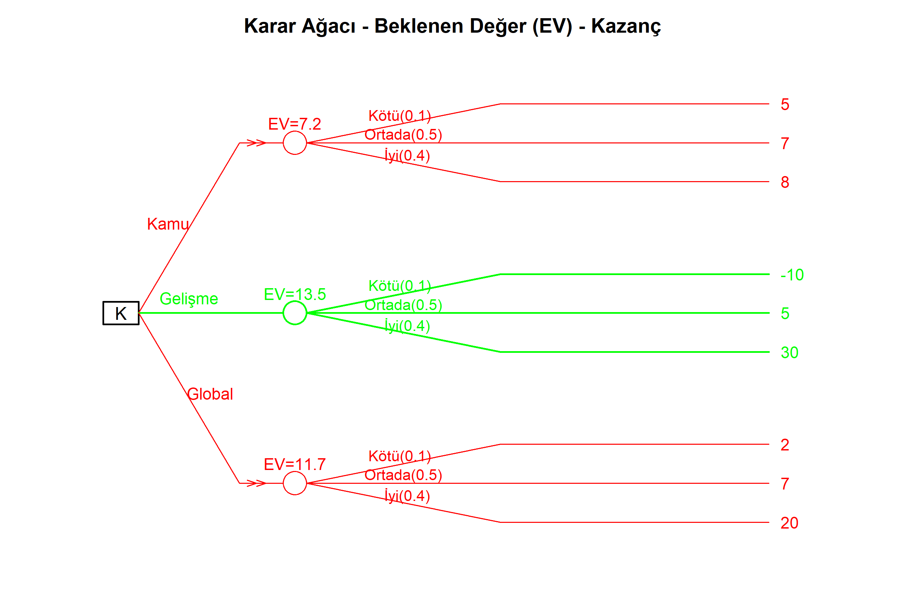
Örnek 4: Fon - Kazanç Matrisi - Beklenen Pişmanlık Ölçütü
Örnek 4: Fon - Kazanç Matrisi - Beklenen Pişmanlık Ölçütü
Kazanç matrisi üzerinde çalışıldığı için fırsat kaybı matrisi, orijinal matrisin sütun değerlerinin her birinin, sütun en büyük değerinden çıkartılmasıyla elde edilir.
| Fon | Gelecekteki Pazar Durumu (% Değişim) | Beklenen Pişmanlık (ER) | ||
|---|---|---|---|---|
| Kötü | Nötr | İyi | ||
| Olasılık | 0.1 | 0.5 | 0.4 | |
| Kamu | 0 | 0 | 22 | 8.8 |
| Gelişme | 15 | 2 | 0 | 2.5 |
| Global | 3 | 0 | 10 | 4.3 |
Fırsat kaybı matrisinin oluşturulmasından sonra olayların gerçekleşmesi olasılıklarından yararlanarak her bir eylem için beklenen fırsat kaybı değerleri hesaplanmalıdır. Söz konusu değerler aşağıdaki gibi hesaplanacaktır.
- Kamu için \(0.1\cdot0 + 0.5\cdot0 + 0.4\cdot22 = 8.8\)
- Gelişme için \(0.1\cdot15 + 0.5\cdot2 + 0.4\cdot0 = 2.5\)
- Global için \(0.1\cdot3 + 0.5\cdot0 + 0.4\cdot10 = 4.3\)
- Sonuçta, beklenen fırsat kaybı ölçütüne göre en iyi strateji en küçük beklenen fırsat kaybı değerini \((2.5)\) veren Gelişme fonu olacaktır.
- Bu ölçütle en iyi olduğu kararlaştırılan Gelişme fonu’nun daha önce beklenen değer ölçütüyle en iyi olduğu belirlenen strateji olduğuna dikkat edilmelidir.
Örnek 4: Fon - Karar Ağacı - Kazanç - Beklenen Pişmanlık
Örnek 4: Fon - Karar Ağacı - Kazanç - Beklenen Pişmanlık
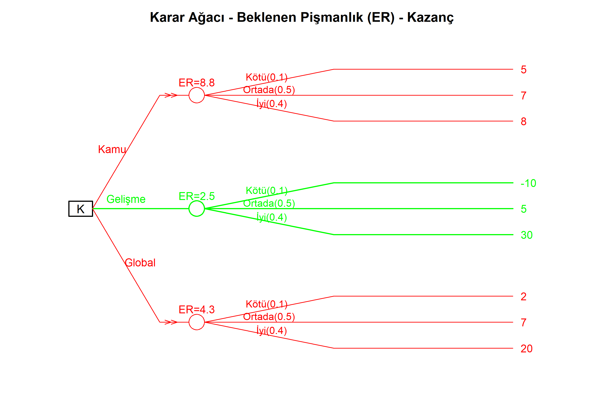
Örnek 5: Doğal Yaşam Okulu
Örnek 5: Doğal Yaşam Okulu
- Doğal yaşam okulu katılanları doğal koşullarda yaşama konusunda eğitmek üzere ormanda kamp yapacaktır. Okul katılımcı sayısının 200, 250, 300 ve 350 olmak üzere dört kategoriden birine ait olacağı tahmin edilmektedir.
- Eğer talebi tam olarak karşılayabilecek şekilde bir kamp organizasyonu yapılabilirse maliyet minimum olacaktır. İdeal talep düzeyinin altında ya da üstündeki sapmalar oda fazlası ve ya talebin karşılanmayan kısmından kaynaklanan gelir kaybı gibi ek maliyetlere neden olacaktır.
- A1, A2, A3 ve A4 sırasıyla 200, 250, 300 ve 350 kişi olarak kamp yerlerinin kapasitesini göstermektedir.
- S1, S2, S3 ve S4 ise sırasıyla 200, 250, 300 ve 350 kişi olarak kampa katılım düzeyini belirtmekte ve gerçekleşme ihtimalleri yine sırasıyla \(0.3\), \(0.4\), \(0.2\) ve \(0.1\) dir.
- Aşağıdaki tablo her bir kamp yeri ve kampa katılım düzeyi çifti için maliyet tablosunu vermektedir.
| Sipariş Miktarı | İstem Miktarı | |||
|---|---|---|---|---|
| S1 | S2 | S3 | S4 | |
| Olasılık | 0.3 | 0.4 | 0.2 | 0.1 |
| A1 | 5 | 10 | 18 | 25 |
| A2 | 8 | 7 | 12 | 23 |
| A3 | 21 | 18 | 12 | 21 |
| A4 | 30 | 22 | 19 | 15 |
Buna göre kaç kişilik bir kamp yeri tutulması gerektiğini en yüksek olabilirlik, beklenen değer ve beklenen pişmanlık kurallarına göre karar ağacı ile hesaplayınız. Her strateji için beklenen maliyeti belirleyiniz.
Örnek 5: Doğal Yaşam Okulu - Karar Ağacı - Kazanç - Genel Gösterim
Örnek 5: Doğal Yaşam Okulu - Karar Ağacı - Kazanç - Genel Gösterim
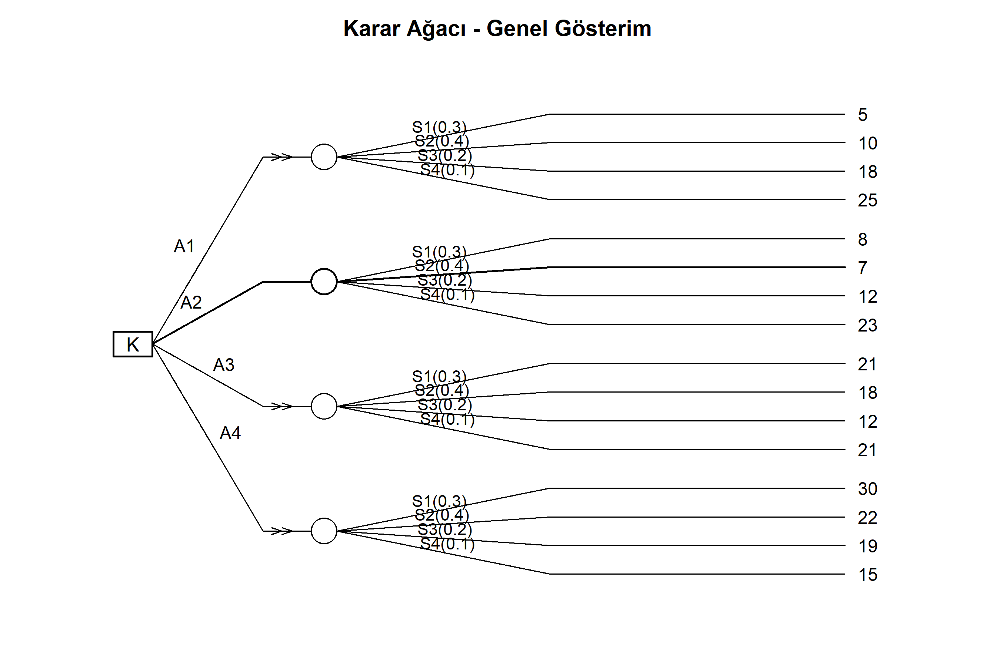
Örnek 5: Doğal Yaşam Okulu - Karar Ağacı - Maliyet - En Yüksek Olabilirlik
Örnek 5: Doğal Yaşam Okulu - Karar Ağacı - Maliyet - En Yüksek Olabilirlik
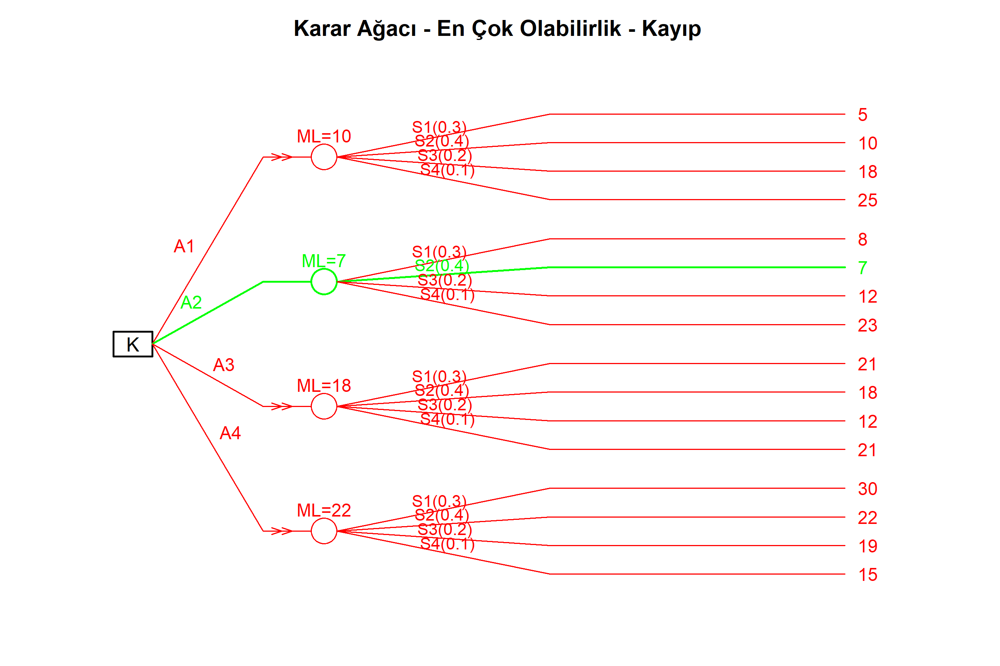
Örnek 5: Doğal Yaşam Okulu - Karar Ağacı - Maliyet - Beklenen Değer
Örnek 5: Doğal Yaşam Okulu - Karar Ağacı - Maliyet - Beklenen Değer
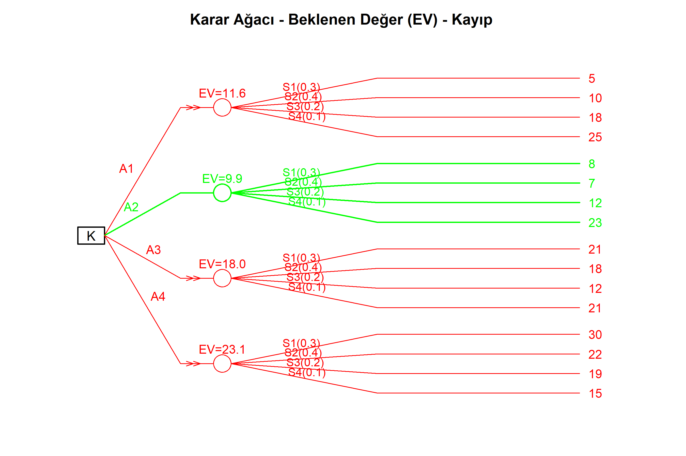
Örnek 5: Doğal Yaşam Okulu - Kayıp Matrisi - Beklenen Pişmanlık Ölçütü
Örnek 5: Doğal Yaşam Okulu - Kayıp Matrisi - Beklenen Pişmanlık Ölçütü
Kayıp matrisi üzerinde çalışıldığı için fırsat kaybı matrisi, orijinal matrisin sütun değerlerinin her birinden, sütun en küçük değerinin çıkartılmasıyla elde edilir.
| Kamp Yeri Kapasitesi | Katılımcı Sayısı | Beklenen Pişmanlık (ER) | |||
|---|---|---|---|---|---|
| S1(200) | S2(250) | S3(300) | S4(350) | ||
| Olasılık | 0.3 | 0.4 | 0.2 | 0.1 | |
| A1(200) | 0 | 3 | 6 | 10 | 3.4 |
| A2(250) | 3 | 0 | 0 | 8 | 1.7 |
| A3(300) | 16 | 11 | 0 | 6 | 9.8 |
| A4(350) | 25 | 15 | 7 | 0 | 14.9 |
Fırsat kaybı matrisinin oluşturulmasından sonra olayların gerçekleşmesi olasılıklarından yararlanarak her bir eylem için beklenen fırsat kaybı değerleri hesaplanmalıdır. Söz konusu değerler aşağıdaki gibi hesaplanacaktır.
- A1 - 200 kişilik kamp yeri \(0.3\cdot0 + 0.4\cdot3 + 0.2\cdot6 + 0.1\cdot10 = 3.4\)
- A2 - 250 kişilik kamp yeri \(0.3\cdot3 + 0.4\cdot0 + 0.2\cdot0 + 0.1\cdot8 = 1.7\)
- A3 - 300 kişilik kamp yeri \(0.3\cdot16 + 0.4\cdot11 + 0.2\cdot0 + 0.1\cdot6 = 9.8\)
- A4 - 350 kişilik kamp yeri \(0.3\cdot25 + 0.4\cdot15 + 0.2\cdot7 + 0.1\cdot0 = 14.9\)
- Sonuçta, beklenen fırsat kaybı ölçütüne göre en iyi strateji en küçük beklenen fırsat kaybı değerini \((1.7)\) veren A2 - \(250\) kişilik kamp yerini tutma olacaktır.
- Bu ölçütle en iyi olduğu kararlaştırılan A2’nin daha önce beklenen değer ölçütüyle en iyi olduğu belirlenen strateji olduğuna dikkat edilmelidir.
Örnek 5: Doğal Yaşam Okulu - Karar Ağacı - Maliyet - Beklenen Pişmanlık
Örnek 5: Doğal Yaşam Okulu - Karar Ağacı - Maliyet - Beklenen Pişmanlık
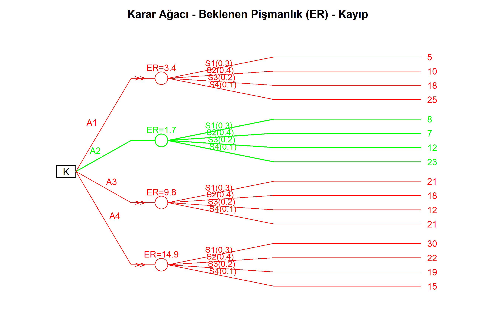
Örnek 6: Wings ’N Things
Örnek 6: Wings ’N Things
AFC, yeni Wings ’N Things fast-food ürününü ulusal çapta piyasaya sürmek üzeredir. Araştırma departmanı, Wings ’N Things’in büyük bir başarı yakalayacağından emindir ve ürünün hiçbir reklam yapılmadan, tüm AFC şubelerinde hemen piyasaya sunulmasını istemektedir.
Pazarlama departmanı ise durumu farklı görmekte ve yoğun bir reklam kampanyası başlatmak istemektedir. Reklam kampanyasının maliyeti \(100 000\) $ olacak ve başarılı olması durumunda \(950 000\) $ gelir getirecektir. Kampanya başarısız olursa (başarısız olma olasılığı \(\%30\)), gelirin \(200 000\) $ olacağı tahmin edilmektedir.
Eğer reklam yapılmazsa, müşterilerin ürüne bağlanmma olasılığı \(0.8\) ve bu durumda gelir \(400.000\) $; bağlanmama olasılığı \(0.2\), ve bu durumda gelir \(200 000\) $ olarak tahmin edilmektedir.
(a) Karar ağacını çiziniz.
(b) AFC bu yeni ürünü piyasaya sürerken hangi stratejiyi izlemelidir?
Örnek 6: Wings ’N Things - Karar Ağacı - Genel Gösterim
Örnek 6: Wings ’N Things - Karar Ağacı - Genel Gösterim
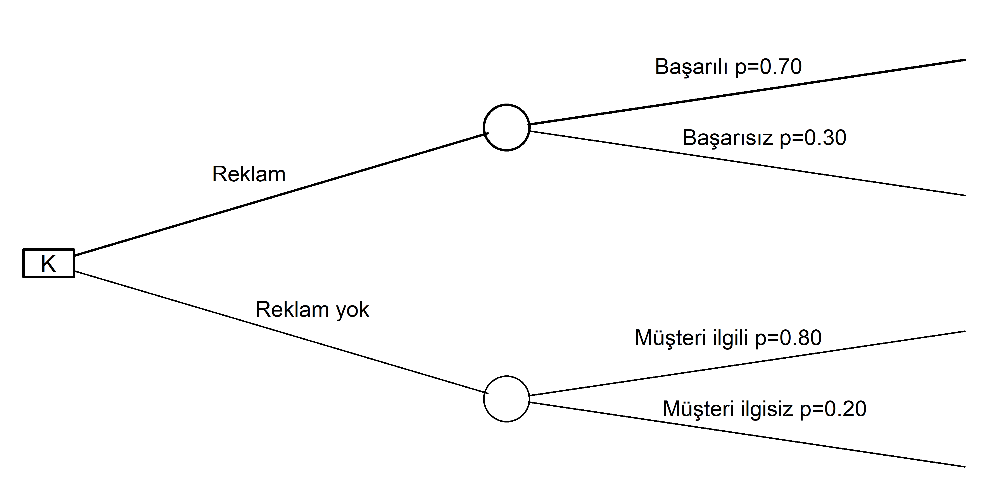
Örnek 6: Wings ’N Things - Karar Ağacı - Getiri Değerleri
Örnek 6: Wings ’N Things - Karar Ağacı - Getiri Değerleri
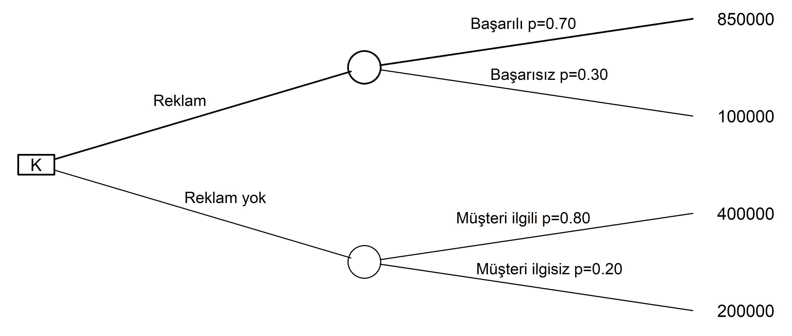
* Reklam kampanyası olması durumunda \(100000\) $ maliyetin olası getirilerden düşüldüğüne dikkat ediniz.Örnek 6: Wings ’N Things - Karar Ağacı - Beklenen Değer
Örnek 6: Wings ’N Things - Karar Ağacı - Beklenen Değer
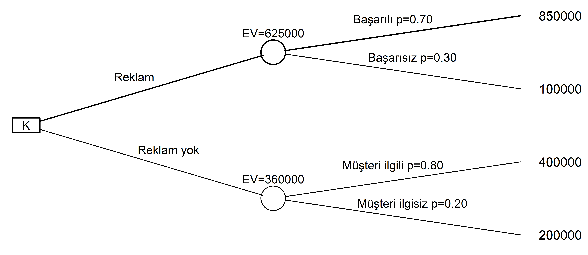
Örnek 6: Wings ’N Things - Karar Ağacı - Beklenen Değer Hesaplanması
Örnek 6: Wings ’N Things - Karar Ağacı - Beklenen Değer Hesaplanması
\[EV(Reklam) = 0.7 \times 850000 + 0.3 \times 100000 = 625000\] \[EV(Reklamsız) = 0.8 \times 400000 + 0.2 \times 200000 = 360000\] \[EV(K) = max( 625000, 360000) = 625000\]
Örnek 6: Wings ’N Things - Karar Ağacı - Optimal Strateji
Örnek 6: Wings ’N Things - Karar Ağacı - Optimal Strateji
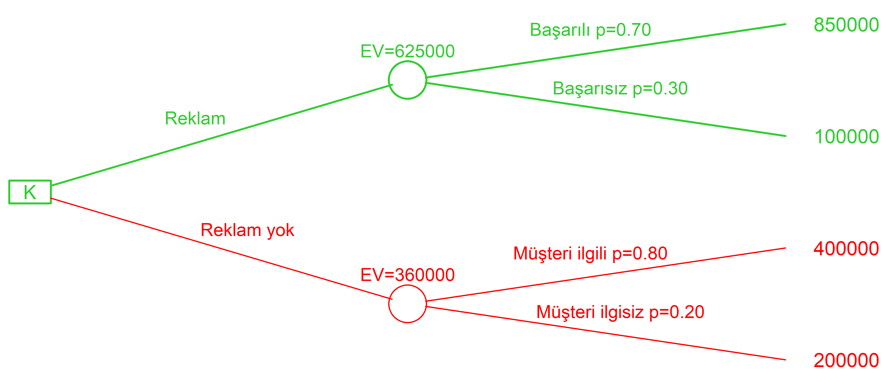
* Beklenen değeri daha yüksek olduğundan (\(625000\) $) AFC reklam kampanyası yürütmek stratejisini izlemelidir.Örnek 7: 3 Atışlı Yazı-Tura Oyunu
Örnek 7: 3 Atışlı Yazı-Tura Oyunu
Olası sonuçları yazı (H) ya da Tura (T) olan adil bir madeni para art arda üç kez atılıyor.
Gelen her bir yazı (H) için \(1.00\) $ kazanıyor ve görünen her iki ardışık yazı (HH) için ayrıca \(0.25\) $ daha alıyorsun (örneğin HHH dizisi iki tane HH içerir: ilk iki atış ve son iki atış).
Buna karşılık, gelen her bir tura (T) için \(1.10\) $ geri veriyorsun. Oyunu oynamak veya oynamamak gibi iki seçeneğinin olduğu durumda
(a) Bu oyun için karar ağacını çiziniz.
(b) Bu oyunu oynamayı tercih eder miydiniz?
Örnek 7: 3 Atışlı Yazı-Tura Oyunu - Karar Ağacı - Genel Gösterim
Örnek 7: 3 Atışlı Yazı-Tura Oyunu - Karar Ağacı - Genel Gösterim
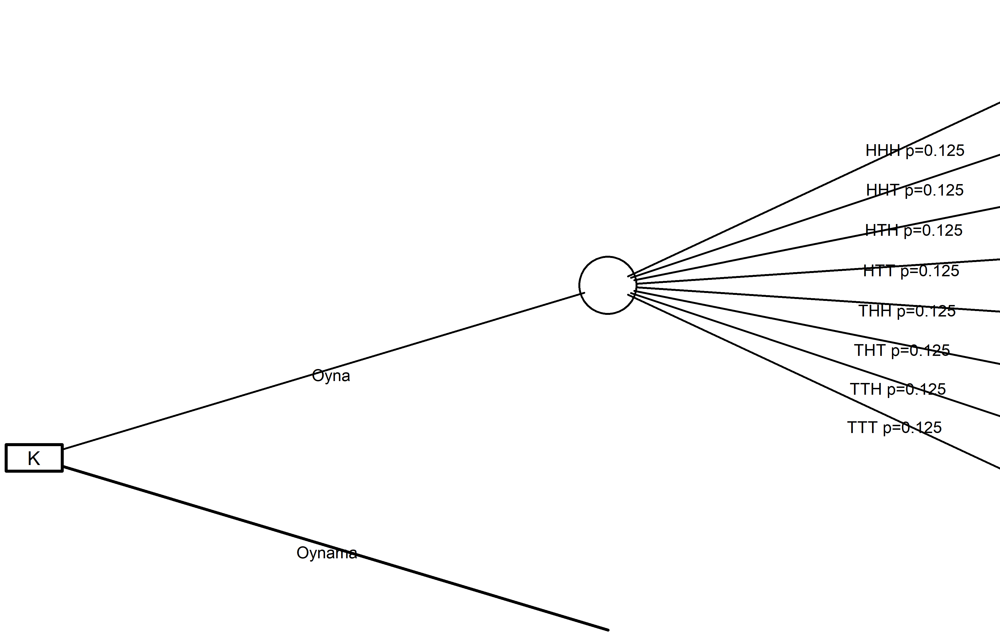
Örnek 7: 3 Atışlı Yazı-Tura Oyunu - Karar Ağacı - Getiri Değerleri
Örnek 7: 3 Atışlı Yazı-Tura Oyunu - Karar Ağacı - Getiri Değerleri
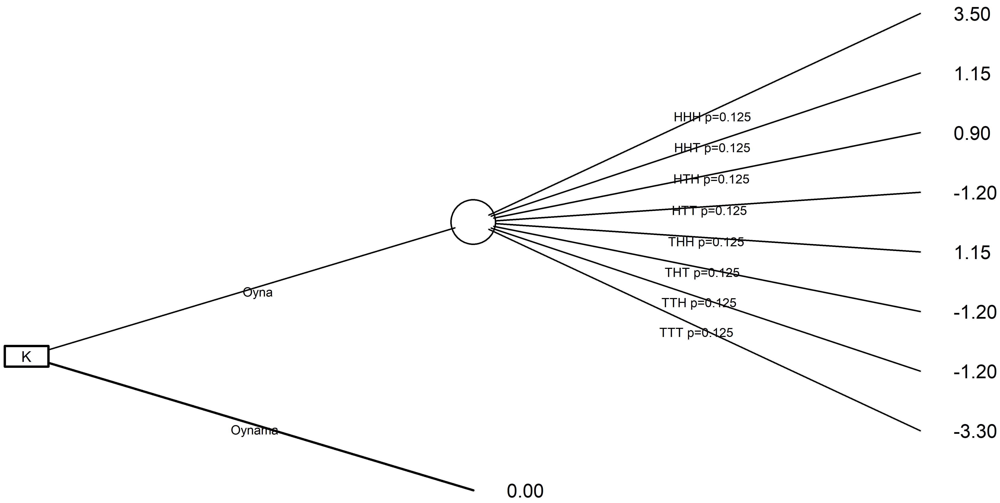
Örnek 7: 3 Atışlı Yazı-Tura Oyunu - Karar Ağacı - Getiri Değerlerinin Hesaplanması
Örnek 7: 3 Atışlı Yazı-Tura Oyunu - Karar Ağacı - Getiri Değerlerinin Hesaplanması
Getiri HHH: \(1 + 1 + 1 + 0.25 + 0.25 = 3.50\)
Getiri HHT: \(1 + 1 - 1.1 + 0.25 = 1.15\)
Getiri HTH: \(1 - 1.1 + 1 = 0.90\)
Getiri HTT: \(1 - 1.1 -1.1 = -1.2\)
Getiri THH: \(-1.1 + 1 + 1 + 0.25 = 1.15\)
Getiri THT: \(-1.1 + 1 - 1.1 = -1.2\)
Getiri TTH: \(-1.1-1.1+1 = -1.2\)
Getiri TTT: \(-1.1-1.1-1.1 = -3.3\)
Getiri Oyun oynanmazsa: \(0\)
Örnek 7: 3 Atışlı Yazı-Tura Oyunu - Karar Ağacı - Beklenen Değer
Örnek 7: 3 Atışlı Yazı-Tura Oyunu - Karar Ağacı - Beklenen Değer
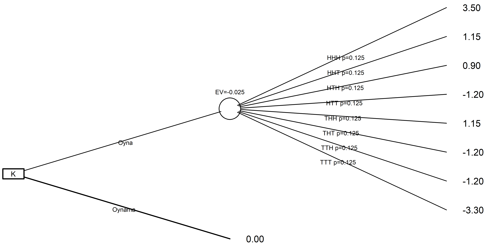
Örnek 7: 3 Atışlı Yazı-Tura Oyunu - Karar Ağacı - Beklenen Değer Hesaplanması
Örnek 7: 3 Atışlı Yazı-Tura Oyunu - Karar Ağacı - Beklenen Değer Hesaplanması
\[\begin{aligned} EV(Yazı/Tura) &= 0.125 \times 3.5 + 0.125 \times 1.15 + 0.125 \times 0.9 \\ &+ 0.125 \times -1.2 + 0.125 \times 1.15 + 0.125 \times -1.2 \\ &+ 0.125 \times -1.2 + 0.125 \times -3.3 = -0.025\end{aligned}\]
\[EV(K) = max( -0.025, 0) = 0\]
Örnek 7: 3 Atışlı Yazı-Tura Oyunu - Karar Ağacı - Optimal Strateji
Örnek 7: 3 Atışlı Yazı-Tura Oyunu - Karar Ağacı - Optimal Strateji
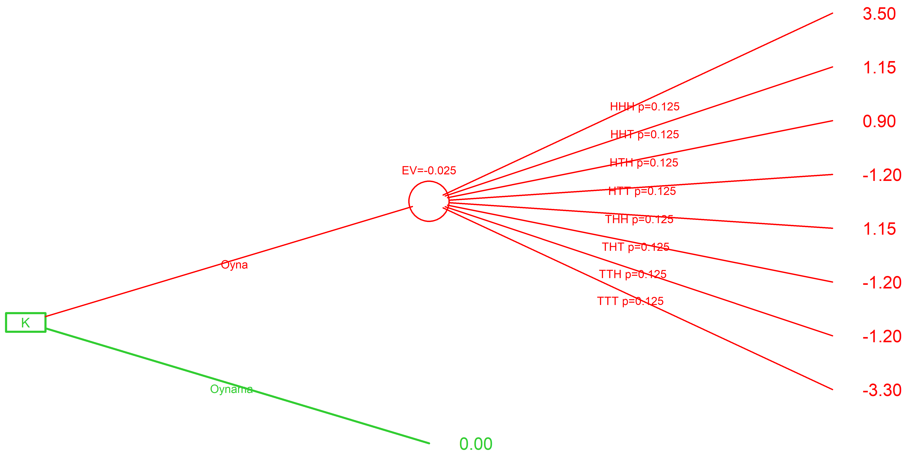
* Beklenen değeri daha yüksek olduğundan \((0)\) karar oyunu oynamamak olmalıdır.Örnek 8: Casino Oyunu
Örnek 8: Casino Oyunu
Bir kumarhanede aşağıdaki oyunu oynama şansınız var. Dürüst (adil) bir zar iki kez atılıyor ve şu dört tür sonuca göre ödeme yapılıyor:
(1) Her iki atış da çift ve aynı sayı (2–2, 4–4, 6–6).
(2) Her iki atış da tek ve aynı sayı (1–1, 3–3, 5–5).
(3) Atışların biri çift, diğeri tek (sırası önemli değil; çift-tek veya tek-çift).
(4) Diğer tüm sonuçlar (çift-çift ama farklı sayılar veya tek-tek ama farklı sayılar).
Paranızla tam olarak iki sonuç üzerine, eşit miktarlarda bahis oynayabilirsiniz. Örneğin, hem 1. sonuca (çift eşleşme) hem de 2. sonuca (tek eşleşme) eşit miktarda para yatırabilirsiniz.
Her \(1\)$ bahis için ödemeler şöyledir:
– 1. sonuç gerçekleşirse \(2.00\)$
– 2. ve 3. sonuçlar gerçekleşirse \(1.95\)$
– 4. sonuç gerçekleşirse \(1.50\)$
(a) Bu oyun için karar ağacını çiziniz.
(b) Hangi iki sonucu seçerdiniz?
(c) Bu oyunda kâra geçme şansınız var mı?
Örnek 8: Casino Oyunu - Durum Olasılıklarının Hesaplanması
Örnek 8: Casino Oyunu - Durum Olasılıklarının Hesaplanması
Olay 1 Örnek Uzay \(\quad{}2–2,\quad{} 4–4,\quad{} 6–6\)
Olay 2 Örnek Uzay \(\quad{}1–1,\quad{} 3–3,\quad{} 5–5\)
Olay 3 Örnek Uzay
\[\begin{aligned} 1-2, \quad{} 2-1,\quad{} 1-4,\quad{} 4-1,\quad{} 1-6,\quad{} 6-1 \\ 2-3,\quad{} 3-2,\quad{} 2-5,\quad{} 5-2,\quad{} 3-4,\quad{} 4-3 \\ 3-6,\quad{} 6-3,\quad{} 4-5,\quad{} 5-4,\quad{} 5-6,\quad{} 6-5 \end{aligned}\]
Olay 4 Örnek Uzay \[\begin{aligned} 1-3, \quad{} 3-1,\quad{} 1-5,\quad{} 5-1,\quad{} 2-4,\quad{} 4-2 \\ 2-6,\quad{} 6-2,\quad{} 3-5,\quad{} 5-3,\quad{} 4-6,\quad{} 6-4 \end{aligned}\]
Olasılıklar
\[P(O_1) = \frac{3}{36} = \frac{1}{12}, \quad{} P(O_2) = \frac{3}{36}= \frac{1}{12}, \quad{} P(O_3) = \frac{18}{36}= \frac{1}{2}, \quad{} P(O_4) = \frac{12}{36}= \frac{1}{3}\]
Örnek 8: Casino Oyunu - Karar Ağacı - Genel Gösterim
Örnek 8: Casino Oyunu - Karar Ağacı - Genel Gösterim
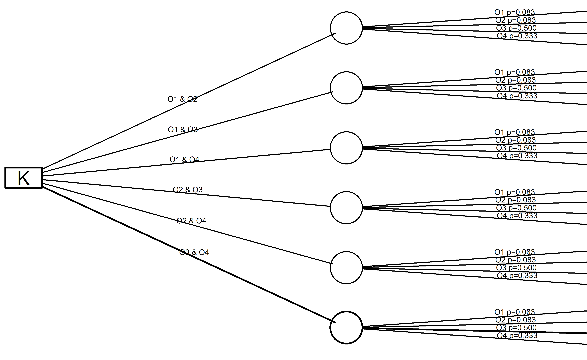
Örnek 8: Casino Oyunu - Karar Ağacı - Getiri Değerleri
Örnek 8: Casino Oyunu - Karar Ağacı - Getiri Değerleri
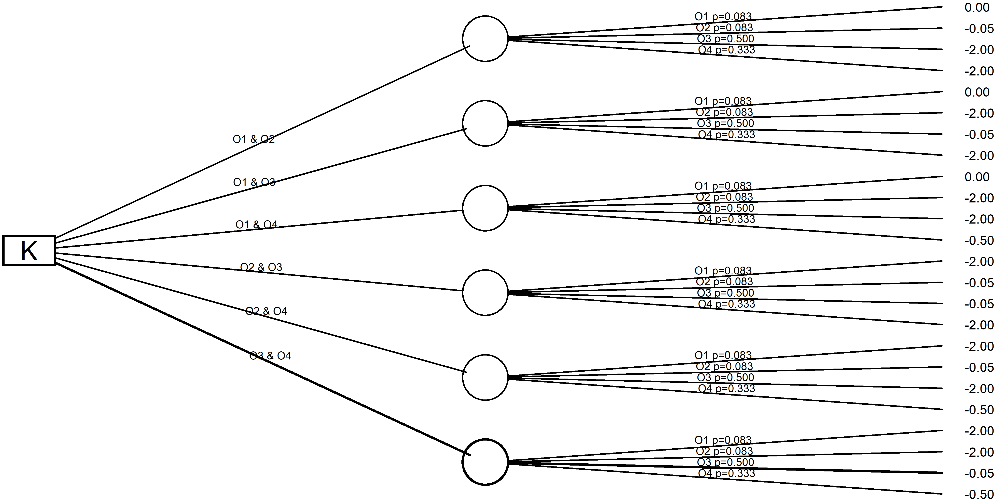
Örnek 8: Casino Oyunu - Karar Ağacı - Getiri Değerlerinin Hesaplanması
Örnek 8: Casino Oyunu - Karar Ağacı - Getiri Değerlerinin Hesaplanması
Oynanan senaryolarin her birine \(1\$\) koyulduysa getiriler.
Getiri \(O_1 \& O_2\) | \(O_1\) gelirse: \(2 + 0 - 2 = 0\)
Getiri \(O_1 \& O_2\) | \(O_2\) gelirse: \(0 + 1.95 - 2 = -0.05\)
Getiri \(O_1 \& O_2\) | \(O_3\) gelirse: \(0 + 0 - 2 = -2\)
Getiri \(O_1 \& O_2\) | \(O_4\) gelirse: \(0 + 0 - 2 = -2\)
Getiri \(O_1 \& O_3\) | \(O_1\) gelirse: \(2 + 0 - 2 = 0\)
Getiri \(O_1 \& O_3\) | \(O_2\) gelirse: \(0 + 0 - 2 = -2\)
Getiri \(O_1 \& O_3\) | \(O_3\) gelirse: \(0 + 1.95 - 2 = -0.05\)
Getiri \(O_1 \& O_3\) | \(O_4\) gelirse: \(0 + 0 - 2 = -2\)
Getiri \(O_1 \& O_4\) | \(O_1\) gelirse: \(2 + 0 - 2 = 0\)
Getiri \(O_1 \& O_4\) | \(O_2\) gelirse: \(0 + 0 - 2 = -2\)
Getiri \(O_1 \& O_4\) | \(O_3\) gelirse: \(0 + 0 - 2 = -2\)
Getiri \(O_1 \& O_4\) | \(O_4\) gelirse: \(0 + 1.5 - 2 = -0.5\)
Getiri \(O_2 \& O_3\) | \(O_1\) gelirse: \(0 + 0 - 2 = -2\)
Getiri \(O_2 \& O_3\) | \(O_2\) gelirse: \(1.95 + 0 - 2 = -0.05\)
Getiri \(O_2 \& O_3\) | \(O_3\) gelirse: \(0 + 1.95 - 2 = -0.05\)
Getiri \(O_2 \& O_3\) | \(O_4\) gelirse: \(0 + 0 - 2 = -2\)
Getiri \(O_2 \& O_4\) | \(O_1\) gelirse: \(0 + 0 - 2 = -2\)
Getiri \(O_2 \& O_4\) | \(O_2\) gelirse: \(1.95 + 0 - 2 = -0.05\)
Getiri \(O_2 \& O_4\) | \(O_3\) gelirse: \(0 + 0 - 2 = -2\)
Getiri \(O_2 \& O_4\) | \(O_4\) gelirse: \(0 + 1.5 - 2 = -0.5\)
Getiri \(O_3 \& O_4\) | \(O_1\) gelirse: \(0 + 0 - 2 = -2\)
Getiri \(O_3 \& O_4\) | \(O_2\) gelirse: \(0 + 0 - 2 = -2\)
Getiri \(O_3 \& O_4\) | \(O_3\) gelirse: \(1.95 + 0 - 2 = -0.05\)
Getiri \(O_3 \& O_4\) | \(O_4\) gelirse: \(0 + 1.5 - 2 = -0.5\)
Örnek 8: Casino Oyunu - Karar Ağacı - Beklenen Değer
Örnek 8: Casino Oyunu - Karar Ağacı - Beklenen Değer
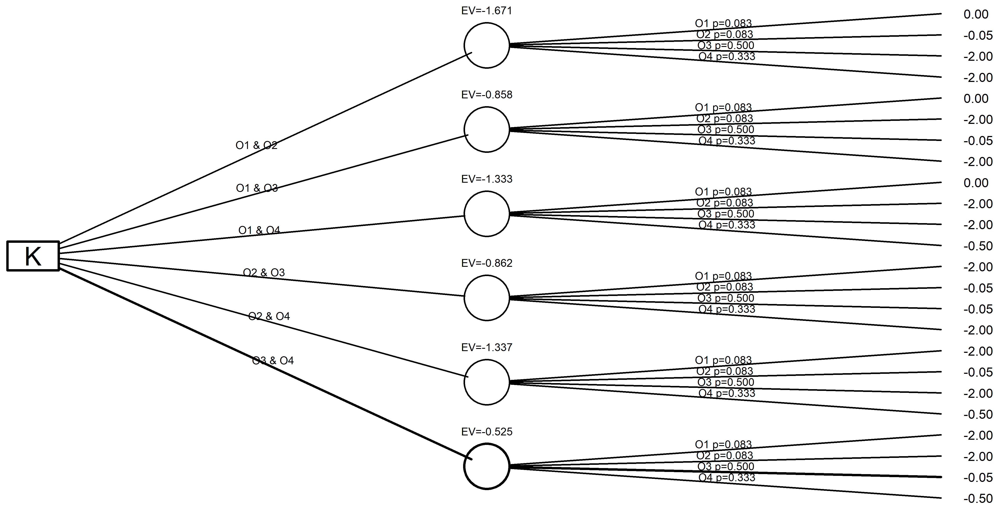
Örnek 8: Casino Oyunu - Karar Ağacı - Beklenen Değer Hesaplanması
Örnek 8: Casino Oyunu - Karar Ağacı - Beklenen Değer Hesaplanması
\[EV(O_1 \& O_2) = 0.08333 \times 0 + 0.08333 \times -0.05 + 0.5 \times -2 + 0.3333 \times -2 = -1.671 \] \[EV(O_1 \& O_3) = 0.08333 \times 0 + 0.08333 \times -2 + 0.5 \times -0.05 + 0.3333 \times -2 = -0.858\] \[EV(O_1 \& O_4) = 0.08333 \times 0 + 0.08333 \times -2 + 0.5 \times -2 + 0.3333 \times -0.5 = -1.333\] \[EV(O_2 \& O_3) = 0.08333 \times -2 + 0.08333 \times -0.05 + 0.5 \times -0.05 + 0.3333 \times -2 = -0.862\] \[EV(O_2 \& O_4) = 0.08333 \times -2 + 0.08333 \times -0.05 + 0.5 \times -2 + 0.3333 \times -0.5 = -1.337\] \[EV(O_3 \& O_4) = 0.08333 \times -2 + 0.08333 \times -2 + 0.5 \times -0.05 + 0.3333 \times -0.5 = -0.525\] \[EV(K) = max(-1.67083, -0.858333, -1.33333, -0.8625, -1.3375, -0.525) = -0.525\]
Örnek 8: Casino Oyunu - Karar Ağacı - Optimal Strateji
Örnek 8: Casino Oyunu - Karar Ağacı - Optimal Strateji
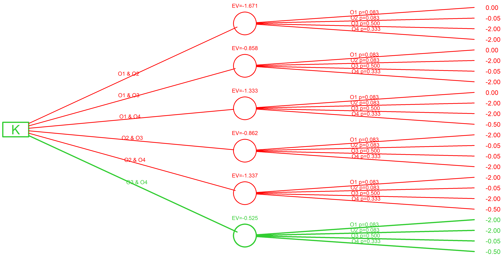
* Tüm çiftler için beklenen değer negatif olduğundan oyun oynanmamalıdır. Ancak illa bir çift seçilmesi isteniyorsa, en az zarar edilecek olan \((-0.525)\) \(O_3 \& O_4\) çiftine para yatırılmalıdır.Örnek 9: Reklam Kampanyası
Örnek 9: Reklam Kampanyası
Piyasaya sürülecek yeni bir ürünün tanıtımı için bir reklam kampanyası düzenlenecektir. Reklam için ya TV ya da gazete seçilecektir.
TV ile kampanyanın başarılı olma olasılığı 0.6 ve bu durumda beklenen kar 90TL dir. Kampanya başarısız olduğunda firmanın, ürünün üretim haklarını 10TL ye devretmek ve ya ürünü yeniden tasarlayarak yeni bir kampanya başlatmak gibi iki stratejisi vardır.
Yeni tasarımlı ürünün başarılı olma şansı 0.7 olup bu durumda beklenen kar 70TL iken başarısız olma durumunda beklenen zarar 20TL dir.
Kampanya gazete ile yapıldığında başarılı olma olasılığı 0.8 ve bu durumda beklenen kar 60TL dir. Başarısız olunması durumunda üretim haklarının devredilmesi ve ya reklam ajansının değiştirilmesi mümkündür.
Üretim haklarının devredilmesi durumunda net kar 25TL dir. Ajansın değiştirilmesi kararlaştırıldığında yeni kampanyanın başarılı olma olasılığı 0.7 ve bu durumda başarının getirisi 40TL, başarısızlığın götürüsü 15TL dir.
Firma için en iyi stratejiyi karar ağacı kullanarak belirleyiniz.
Örnek 9: Reklam Kampanyası - Karar Ağacı - Genel Gösterim
Örnek 9: Reklam Kampanyası - Karar Ağacı - Genel Gösterim
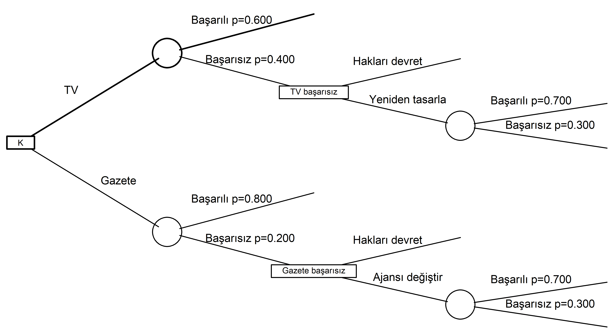
Örnek 9: Reklam Kampanyası - Karar Ağacı - Getiri Değerleri
Örnek 9: Reklam Kampanyası - Karar Ağacı - Getiri Değerleri
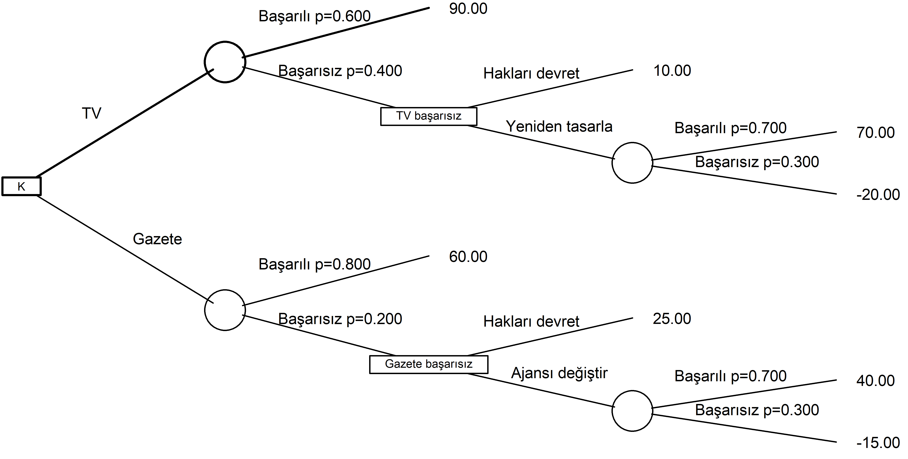
Örnek 9: Reklam Kampanyası - Karar Ağacı - Beklenen Değer
Örnek 9: Reklam Kampanyası - Karar Ağacı - Beklenen Değer
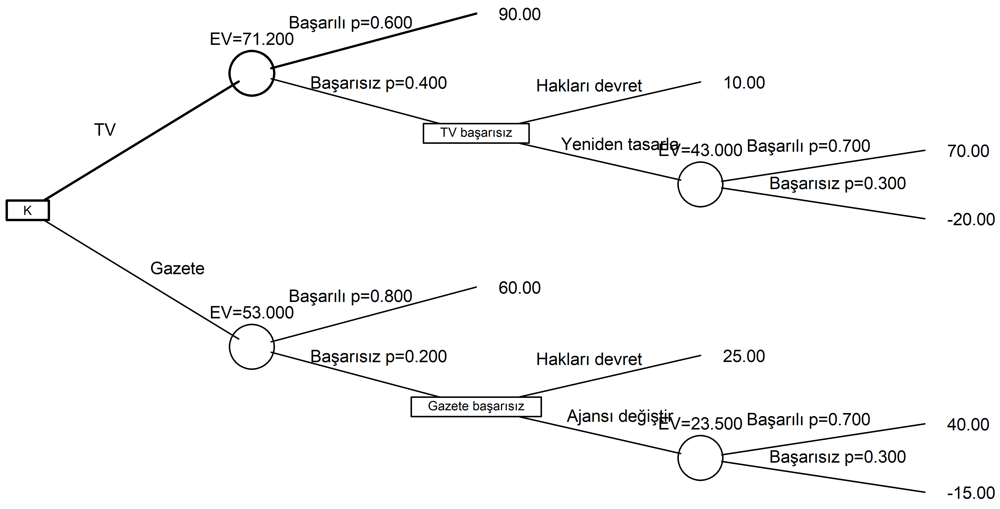
Örnek 9: Reklam Kampanyası - Karar Ağacı - Beklenen Değer Hesaplanması
Örnek 9: Reklam Kampanyası - Karar Ağacı - Beklenen Değer Hesaplanması
\[EV(Yeni tasarım kamp.) = 0.7 \times 70 + 0.3 \times -20 = 43\]
\[EV(TV başarısız) = max( 10, 43) = 43\]
\[EV(TV kampanya) = 0.6 \times 90 + 0.4 \times 43 = 71.2\]
\[EV(Yeni ajans kamp.) = 0.7 \times 40 + 0.3 \times -15 = 23.5\]
\[EV(Gazete başarısız) = max( 25, 23.5) = 25\]
\[EV(Gazete kampanya) = 0.8 \times 60 + 0.2 \times 25 = 53\]
\[EV(K) = max( 71.2, 53) = 71.2\]
Örnek 9: Reklam Kampanyası - Karar Ağacı - Optimal Strateji
Örnek 9: Reklam Kampanyası - Karar Ağacı - Optimal Strateji
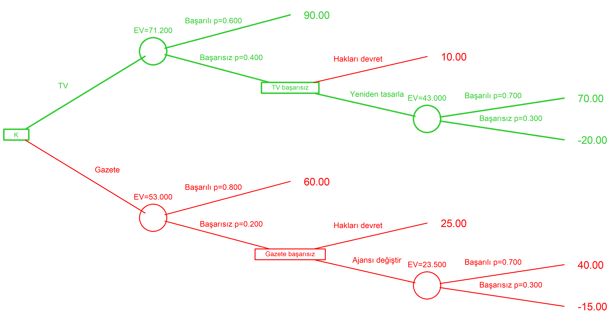
* Öncelikle gazete \((53)\) kampanyası yerine daha yüksek getiriye sahip TV \((71.2)\) kampanyası tercih edilmelidir. Eğer TV kampanyası başarısız olursa, o durumda da daha düşük getiriye sahip olan hakları devretmek \((10)\) stratejisi yerine, daha yüksek beklenenen getiriye sahip yeniden tasarlama \((43)\) stratejisi denenmelidir.Örnek 10: A ve B Yatırım
Örnek 10: A ve B Yatırım
Bir yatırımcı A ve B seçeneklerinden hangisine yatırım yapmasının uygun olacağını araştırmaktadır.
- Yatırımcının alternatif stratejileri şöyledir:
- Yatırım yapmamak
- A’nın seçilmesi ve başarılı olunması durumunda yatırımcı ya hiçbir şey yapmadan beklemekte ya da elde ettiği kazançla B’ye yatırım yapmaktadır.
- Bunun tam tersi de bir başka alternatiftir.
- A’da başarılı olma olasılığı 0.70, B’de başarılı olma olasılığı 0.40’dır.
- Her iki yatırım seçeneğinin gerektirdiği yatırım miktarı da 2000 TL olup, başarısız olunması durumunda kazanç –2000 TL olmaktadır.
- A’nın başarılı olması durumunda 3000 TL (yatırım miktarı dahil), B’nin başarılı olması durumunda 5000 TL (yatırım miktarı dahil) elde edilmektedir.
Firma için en iyi stratejiyi karar ağacı kullanarak belirleyiniz.
Örnek 10: A ve B Yatırım - Karar Ağacı - Genel Gösterim
Örnek 10: A ve B Yatırım - Karar Ağacı - Genel Gösterim
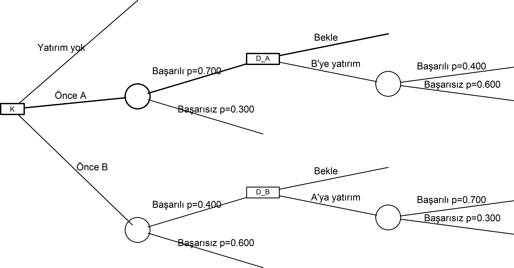
Örnek 10: A ve B Yatırım - Karar Ağacı - Getiri Değerleri
Örnek 10: A ve B Yatırım - Karar Ağacı - Getiri Değerleri
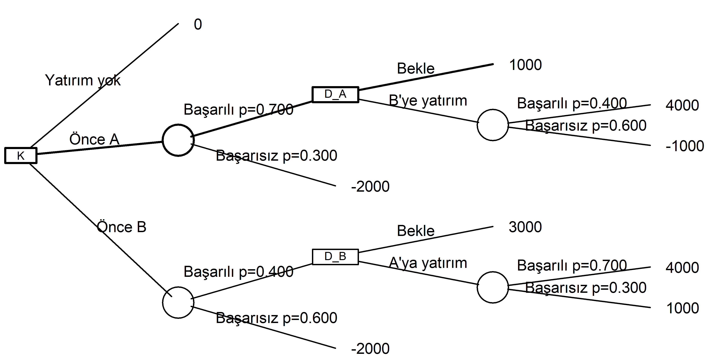
Örnek 10: A ve B Yatırım - Karar Ağacı - Beklenen Değer
Örnek 10: A ve B Yatırım - Karar Ağacı - Beklenen Değer
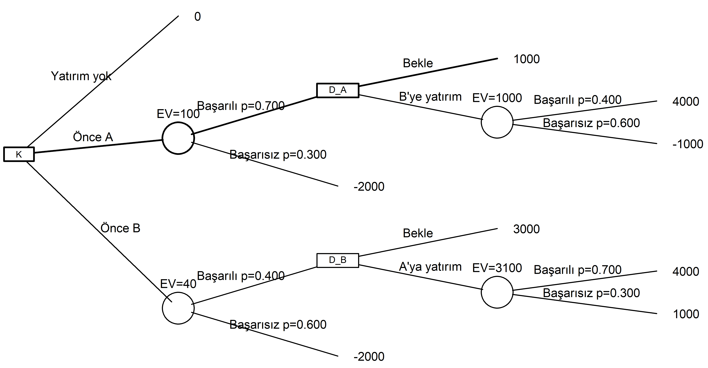
Örnek 10: A ve B Yatırım - Karar Ağacı - Beklenen Değer Hesaplanması
Örnek 10: A ve B Yatırım - Karar Ağacı - Beklenen Değer Hesaplanması
\[EV(B) = 0.4 \times 4000 + 0.6 \times -1000 = 1000\]
\[EV(D\_A) = max( 1000, 1000) = 1000\]
\[EV(A) = 0.7 \times 1000 + 0.3 \times -2000 = 100\]
\[EV(A) = 0.7 \times 4000 + 0.3 \times 1000 = 3100\]
\[EV(D\_B) = max( 3000, 3100) = 3100\]
\[EV(B) = 0.4 \times 3100 + 0.6 \times -2000 = 40\]
\[EV(K) = max( 0, 100, 40) = 100\]
Örnek 10: A ve B Yatırım - Karar Ağacı - Optimal Strateji
Örnek 10: A ve B Yatırım - Karar Ağacı - Optimal Strateji
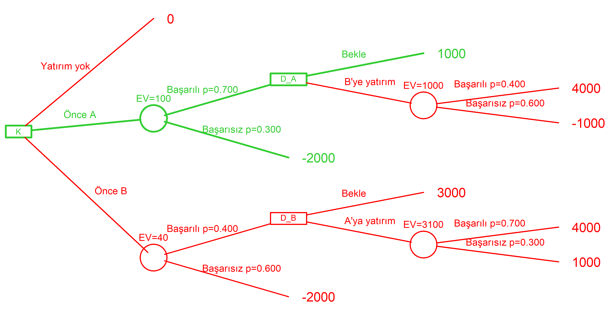
* Yatırımcı öncelikle A yatırımını yapacaktır. Başarısız olursa 2000TL kaybedecektir. Başarılı olursa kazandığı 1000 TL yi alarak bekleyecektir. B ye yatırım yapmak daha iyi bir beklenen sonuç vermemektedir.
IST207 - Yöneylem Araştırması - Hafta 12 - 04 Aralık 2025 - Doç. Dr. Erhan Çene